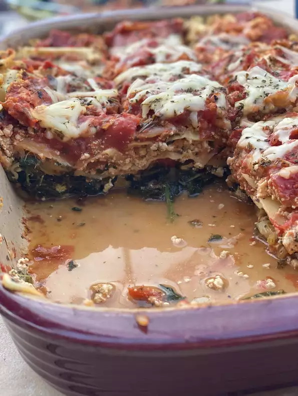

Vegan Lasagna Recipes
This is a very tasty recipe for vegan Lasagna 
Ingredients
- 2 tablespoons olive oil
- 1 1/2 cups chopped onion
- 3 tablespoons minced garlic
- 4 cans stewed tomatoes
- 1/3 cup tomato paste
- 1/2 cup chopped parsley
- 1 teaspoon salt
- 1 (16 ounce) packed Lasagna noodles
- 2 pounds firm tofu
- 2 tablespoons mince garlic
- 1/4 chopped fresh basil
- 3 (10 ounce) packages frozen chopped spinach, thawd and drained
Steps:
- Make the sauce: In a large, heavy saucepan, over medium heat, heat the olive oil. Place the onions in the saucepan and saute them until they are soft, about 5 minutes. Add the garlic; cook 5 minutes more.
- Place the tomatoes, tomato paste, basil and parsley in the saucepan. Stir well, turn the heat to low and let the sauce simmer covered for 1 hour. Add the salt and pepper.
- While the sauce is cooking bring a large kettle of salted water to a boil. Boil the lasagna noodles for 9 minutes, then drain and rinse well.
- Preheat the oven to 400 degrees F (200 degrees C).
- Place the tofu blocks in a large bowl. Add the garlic, basil and parsley. Add the salt and pepper, and mash all the ingredients together by squeezing pieces of tofu through your fingers. Mix well.
- Assemble the lasagna: Spread 1 cup of the tomato sauce in the bottom of a 9x13 inch casserole pan. Arrange a single layer of lasagna noodles, sprinkle one-third of the tofu mixture over the noodles. Distribute the spinach evenly over the tofu. Next ladle 1 1/2 cups tomato sauce over the tofu, and top it with another layer of the noodles. Then sprinkle another 1/3 of the tofu mixture over the noodles, top the tofu with 1 1/2 cups tomato sauce, and place a final layer of noodles over the tomato sauce. Finally, top the noodles with the final 1/3 of the tofu, and spread the remaining tomato sauce over everything.
- Cover the pan with foil and bake the lasagna for 30 minutes.
- SERVE HOT AND ENJOY!